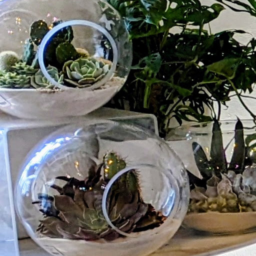

Affinity of Houseplants: A Beginners Guide
Plant Parenting 101
Visions of green: An introduction.

You have visions of green plants in your living space, although you haven’t owned any, and you are not sure where to begin. Do you consult the internet? Probably. Do you look at plant magazines, or gardening books, but still aren’t sure where to begin? Most likely.
What's Next?
Well, I have news…
Even the most experienced plant owner, or botanical gardener, had to start somewhere. The following is my advice for aspiring plant parents.
Source: Valery and Fox_Design | Adobe Stock Edu. Lic.
1. Key Things to Consider.
How difficult will it be?

Being a plant parent can be as easy or as difficult as you want to make it. I suggest taking baby steps first.
When you are first beginning to furnish your space with plants, there are key things to consider.
First Considerations.
The first thing to consider; is whether you want flourishing plants, or having them contained, as in a terrarium?
An Example:
For terrariums, you have to consider the size and type of container you want to fill, as well as location; i.e., a table, desk, or shelf, or large enough for a corner on the floor. In additon, to considering the type of lighting (See below).
2. More Key Things...
Determine the types of plants you might want with these considerations:

- Budget: How much do you want to spend on your first plant(s)
- The size of your space.
- Whether you want hanging or table/shelf display.
- The type of lighting your space offers (full sun, indirect/bright, or low/no light).
- The size of the plants, at their maximum size (width/Height).
- The type of plant: foliage houseplants, tropical plants, or succulents.
- Only green, flowering plants, or something with unique characteristics.
- Do you want easy care, minimal maintenance, or something that may take more time to nuture. Can it use some neglect?
💡 Important Things.
The most important thing to consider is whether you have pets or children; because some plants are toxic.

💡 Water Matters!
Watering your plants is essential to their health, and so is the water. When watering, use filtered, bottled, or distilled water.
💡 Never Use Tap Water!
Tap water; depending on where you live, may have toxins that will injure or kill your plants. Not necessarily humans.
3. Making a choice.
You've made a decision...

You have decided that with your time constraints low maintenance plants would be ideal, and while you have discovered some slow growing, easy care foliage plants, like the Peperomia varienties (Image Above), you have decided to begin with succulents.
In general, succulents definately fall into the easy care category; because many can endure some neglect. Now that you know the type of plants you want to start with, you now have to decide how to contain them.
Not to mention, the lighting situation for their new home.
Will they be in individual pots, as a collection in a single pot, or in a terrarium?
You decided on the terrarium for a number of reasons, but mainly because they look like a piece of art in addition to being a functional display of plants.

Terrarium considerations:
- Type of container.
- Type of filling (substrate).
- Type of Plants.
The following page, offers resources for building a terrarium. The page has everything an individual would need to create and provide care for.
4. Where to find your plants.
There are many places to discover plants.

The most convenient place to get them are at your local grocer, or at big box stores that have a home and garden center. Although, there is always the trusty nursery. Even buying plants through the internet can be fruitful if your source is reputable. Even so, seeing your plants and having them in hand is always the better choice.
Nowadays, there are plant specific nurseries, that specialize in specific types of plants, such as succulents. Below is a map where you can find the type of plants you want to explore, learn about, and keep.

Nurseries and Garden Centers
Here is a map of nurseries and garden stores near you, in California. This list is not exhaustive.
Other fun places to find plants.
💡 It's always a good idea to consult a professional!